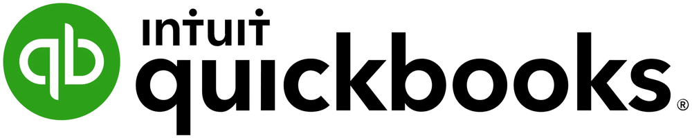

Inscripciones cerradas Gratuito 100 % virtual
Aprende contabilidad con QuickBooks
Formación práctica en 2 sesiones virtuales
Abre la contabilidad de una empresa en la nube y recorre el ciclo contable, del registro de cada operación a la organización de las cuentas.
Vie. 27 de noviembre Mié. 2 de diciembre 11:00 a. m. – 1:00 p. m.
Las inscripciones para este microtaller ya cerraron. Los demás microtalleres de diciembre siguen abiertos.
Ver eventos con inscripción abierta →¿Por qué este microtaller?
QuickBooks es una plataforma de contabilidad en la nube que digitaliza el ciclo contable, y muchas pequeñas y medianas empresas la usan. Aquí la conocerás trabajando, no solo leyendo.
Contabilidad en la nube
Registra y organiza las operaciones de una empresa desde cualquier lugar, sin instalar nada.
Una empresa para practicar
Abres la contabilidad de Crece Digital S.A.S. y avanzas paso a paso, como en un caso real.
Una herramienta que se usa
Aprende un software que utilizan pymes, útil para tu perfil en Economía, Administración y Contaduría.
Qué vas a hacer en cada sesión
-
Sesión 1 · Viernes 27 de noviembre
Conoce QuickBooks y abre Crece Digital S.A.S.
11:00 a. m. – 1:00 p. m. · Virtual -
Sesión 2 · Miércoles 2 de diciembre
Crea tu plan de cuentas, el capital y el catálogo
11:00 a. m. – 1:00 p. m. · Virtual
Tu certificado
Certificación
Válido por 10 horas de corresponsabilidad y listo para LinkedIn
Recibes un certificado de participación de la Unidad de Informática de la Facultad de Ciencias Económicas, que puedes compartir en tu perfil de LinkedIn. Para obtenerlo y recibir las horas:
- Asiste a las dos sesiones.
- Conéctate al menos el 70 % del tiempo de clase.
- Diligencia el formulario de preguntas.
- Responde la encuesta de satisfacción.
Quién te acompaña

Monitora a cargo
Angelica Cárdenas
Monitora UIFCE · Estudiante de Economía
Inscripciones cerradas
Este microtaller ya no recibe inscripciones. Revisa los demás microtalleres de diciembre: siguen abiertos y son gratuitos.